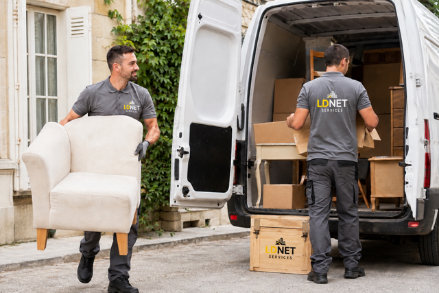

Débarras d'appartements & maisons
Vidage complet ou partiel de logements, meubles, électroménager et cartons, avant vente, location ou reprise des clés. Intervention rapide et soignée, sans dégrader les lieux.
Devis gratuitDÉBARRAS & ÉVACUATION D'ENCOMBRANTS
Débarras complet d'appartements, maisons, caves, greniers, bureaux et locaux commerciaux — tri sélectif, dépôt en déchetterie agréée, interventions pour successions, déménagements ou logements insalubres. Basés à Livry-Gargan (93), nous intervenons dans toute l'Île-de-France.
🗑️ Débarras rapide et soigné — devis gratuit sous 24h, sans engagement
Obtenir mon devis gratuitNOS PRESTATIONS
Chez LDNET GLOBAL SERVICES, nous prenons en charge l'intégralité du débarras : démontage si nécessaire, port des charges, tri, évacuation et dépôt en déchetterie agréée. Vous n'avez rien à gérer.
Vidage complet ou partiel de logements, meubles, électroménager et cartons, avant vente, location ou reprise des clés. Intervention rapide et soignée, sans dégrader les lieux.
Devis gratuitÉvacuation d'encombrants, objets stockés depuis des années, vieux meubles et déchets dans les espaces difficiles d'accès. Nettoyage du sol en option après débarras.
Devis gratuitIntervention discrète et respectueuse pour vider un logement suite à un décès. Tri attentif des objets personnels et de valeur, accompagnement des familles à leur rythme.
Devis gratuitDébarras et remise en état de logements très encombrés ou insalubres (syndrome de Diogène, squats, dégâts des eaux). Équipe équipée, protocole adapté, discrétion garantie.
Devis gratuitDébarras de mobilier de bureau, archives, matériel informatique obsolète lors d'un déménagement, d'une fermeture ou d'un réaménagement. Destruction de documents confidentiels sur demande.
Devis gratuitEnlèvement ponctuel d'un meuble, électroménager en panne ou encombrant volumineux que vous ne pouvez pas transporter vous-même. Intervention rapide, sur rendez-vous.
Devis gratuitNOTRE MÉTHODE
Une organisation simple en quatre étapes, du premier appel à la remise des lieux, pour un débarras sans stress de votre côté.
Vous nous décrivez le volume et le type de biens à évacuer. Nous vous proposons un prix ferme, sans surprise, sous 24h.
Nous fixons ensemble une date d'intervention, y compris en urgence pour les fins de bail ou successions pressées.
Notre équipe vide les lieux, trie les objets (don, recyclage, déchetterie agréée) et transporte le tout hors de votre logement ou local.
Sur demande, nous complétons le débarras par un nettoyage complet des lieux — sols, sanitaires, vitres — pour une remise en état prête à visiter.

QUESTIONS FRÉQUENTES
Le prix dépend du volume à évacuer, de l'accessibilité du logement (étage, ascenseur) et du type d'objets. Nous établissons un devis gratuit et sans engagement, avec un prix ferme communiqué avant l'intervention.
Nous trions systématiquement : les objets en bon état sont proposés au don ou au réemploi, le reste est évacué en déchetterie agréée dans le respect du tri sélectif.
Oui, nous accompagnons les familles avec discrétion et respect, y compris pour le tri d'objets personnels ou de valeur, en adaptant le rythme à vos besoins.
Le débarras seul laisse les lieux vidés et balayés. Nous proposons en complément un nettoyage complet pour une remise en état avant vente ou location.
Nous répondons à votre demande de devis sous 24h et planifions l'intervention dans les jours suivants. Pour une urgence, contactez-nous directement par téléphone.
Oui : mobilier de bureau, archives, matériel informatique obsolète, avec possibilité de destruction de documents confidentiels sur demande.